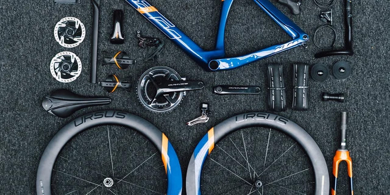

Scheda Tecnica
Approfondimenti, guide e confronti tecnici per capire meglio il mondo delle bici da corsa.

Shimano vs SRAM: quale gruppo scegliere
Due filosofie a confronto: precisione giapponese contro innovazione americana. Scopri quale gruppo trasmissione si adatta meglio al tuo stile di guida.
Approfondisci

I componenti essenziali di una bici da corsa
Dal telaio ai freni, dalle ruote alla trasmissione: tutti i dettagli che rendono una bici performante e sicura.
Approfondisci
Come scegliere la bici da corsa perfetta
Materiali, geometrie, trasmissioni e budget: la guida completa per trovare la bici ideale in base ai tuoi obiettivi.
Approfondisci